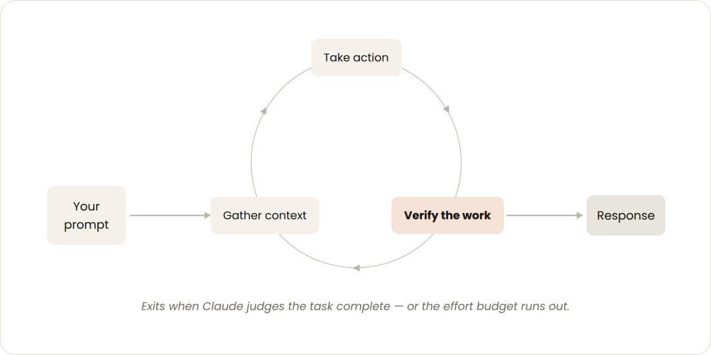
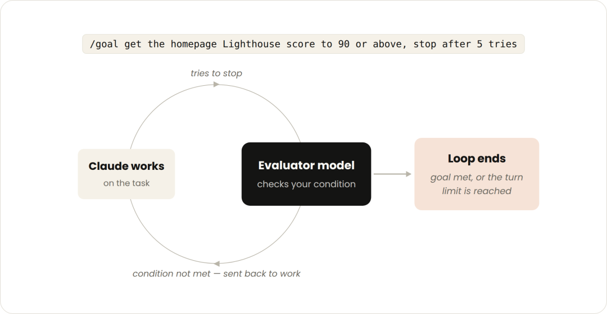
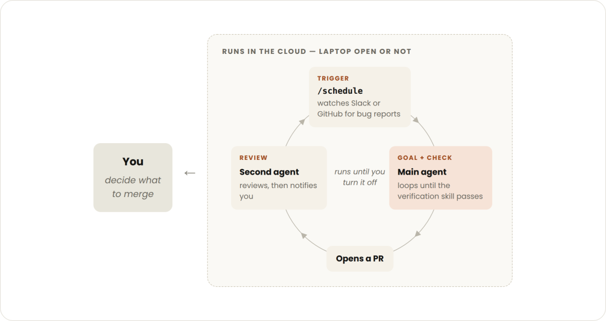

上个月写完《Loop Engineering》这篇文章之后，我一直在用 /goal 跑各种任务。当时的结论是 loop 好不好用取决于你能不能把”做完了”写清楚。这话没错，但其实并不完整。后来我碰到很多任务，并不是把停止条件写清楚就能完事的，还有验证步骤和触发时机都很关键。
刚看到 Claude Code 团队发了一篇官方博客，把他们内部怎么想 loop 这件事系统梳理了一遍。读完觉得挺有价值的，它给了一个我之前没想过的判断框架：loop 分四层，区分标准是你愿意交出去什么。验证步骤、停止条件、触发时机、整个决策流程，这四样东西对应四层 loop，具体怎么选择取决于你愿意放手多少。
Claude Code 团队把 loop 定义为 Agent 重复执行工作、循环直到满足停止条件，然后按触发方式、停止机制和适用场景分成了四种。这个分法比社区里各种五花八门的说法清楚得多，因为它有明确的递进关系：你交出去的东西越多，Claude Code 帮你自动完成的任务也就越多，当然对应的成本也会越高。
第一层：交出验证步骤

这是最基础的一种。你发一条 prompt，Claude Code 读代码、改代码、跑测试、返回结果，然后等你的下一条指令。
这就是我们每天都在用的标准交互模式。你还在循环里，每一轮都需要你判断"做完了没"。
怎么让这种模式更高效？Claude Code 团队的建议是把你的验证步骤写成 Skill。比如前端改了一个按钮，应该启动 dev server、打开页面、点一下、截图、检查 console。把这些写进 SKILL.md，Claude Code 就能自己跑完验证，不用你每次手动检查。
---
name: verify-frontend-change
description: 任何 UI 改动在宣布完成前必须端到端验证。
---
# 前端改动验证流程
1. 启动 dev server，在浏览器中打开改动页面。
2. 直接与改动交互（点按钮、填表单），确认预期行为。
3. 检查浏览器 console：不能有新的 error 或 warning。
4. 用 Chrome Devtools MCP 跑一次性能追踪。你可以看到，这一层交出去的是"怎么确认做对了"。Claude Code 替你检查，但做什么、做到什么程度，还是你说了算。
第二层：交出停止条件

Turn-based 的问题是复杂任务一轮搞不定，Claude Code 会频繁停下来问你要决策。/goal 解决的正是这个问题：你定义好成功标准，Claude Code 自己迭代到满足为止。
/goal 把首页 Lighthouse 分数提到 90 以上，最多试 5 次。这一层你交出去的是"什么时候算做完"。/goal 的关键在于停止条件必须是确定性的。数字、测试通过数、分数阈值这种最好用。为什么？因为描述性结果要大模型自己给自己打分，这种打分很不靠谱，而跑个 Lighthouse 拿到 92 分这种确定性结果它才能判断得准。
每次 Claude Code 尝试停下来，会有一个独立的评估模型检查你的条件是否满足。没满足就打回去继续干，直到达标或者到了你设的次数上限。
这跟 Codex 的 /goal 机制本质上是一样的。我之前在《Codex /goal 》文章中提过的"完成契约"概念在这里同样适用：你把"做完"从主观判断变成可验证的合约，agent 才能真正闭环。
第三层：交出触发时机
前两种都是你手动触发的。但有些工作是周期性的，比如每天早上总结 Slack 消息，或者持续盯着一个 PR 等 review 评论进来。
/loop 做的就是这件事：按时间间隔重复执行同一条 prompt。
/loop 5m 检查我的 PR，处理 review 评论，修复挂掉的 CI这一层你交出去的是"什么时候该跑"。每 5 分钟检查一次 PR，有新 review 就处理，CI 挂了就修。你不需要一直盯着，它自己按节奏跑。
有一点需要注意的是，/loop 跑在你本地，机器关掉它就停止了。如果想让它不间断，需要用 /schedule 把它变成一个云端任务。
我觉得这一层最有意思的地方是它把 Claude Code 变成了一个值班机器人。以前你盯 CI、盯 review、盯 deploy，现在这些事可以交给一个定时轮询的 agent。当然它是以 token 消耗为代价的，这个后面会说。
第四层：交出整个决策流程

最后一种是把前面所有原语组合起来，做成一个无人值守的长期任务流水线。
比如处理用户反馈：用 /schedule 每小时检查一次 #project-feedback 频道，用 /goal 定义每个 bug report 必须被分类、修复、回复，用动态工作流让多个 agent 并行探索不同修复方案，用 auto mode 跳过权限确认。
/schedule 每小时检查 #project-feedback 里的 bug 报告。
/goal 这一轮发现的每个报告都必须被分类、修复、回复后才能停。
修 bug 时用动态工作流在并行 worktree 里探索三种方案，
再让一个独立 agent 做对抗性审查。这一层你交出去的是整个决策流程：做什么、怎么做、什么时候做、做到什么程度，全部由 agent 自己决定。
说实话这一层出问题的概率是最高的。动态工作流加上 /schedule 加上 auto mode，组合起来确实是一个完整的 agent 流水线。这对大模型本身的性能和你提供给它的上下文信息有极高的要求，也是最烧 token 的模式，动态工作流一次能起几十 agent，没有做好成本控制的话，很容易账单就爆了。前阵子不少公司砍掉了员工的 Claude 订阅，我觉得这种跑法肯定是原因之一。
怎么控制 token 消耗
从前面可以看出，交给 Claude Code 的越多，token 消耗也就越大。Claude Code 团队给了几条实操建议：
速查表
写在最后
回到开头说的那个问题：loop 用不好，往往不是模型不行，是你选错了层级。
我自己的经验是，先从 /goal 开始。找一个你每天重复做的事，问自己能不能把"做完了"写成一句可验证的话。能写出来，你就可以从 turn-based 升级到 goal-based 了。这一步收益最大，门槛最低，最能节省人力。至于 /loop 和 proactive，等你把 /goal 用顺了再说也不迟。
如果你想了解更多，推荐阅读：
• Claude Code 官方 Loop 博客：https://claude.com/blog/getting-started-with-loops • Loop Engineering 很好，但先想清楚一个问题：https://mp.weixin.qq.com/s/QR40uuNa1oxtV5ds3i3Ukw • Codex /goal 上线后，我把 Ralph loop 卸了：https://mp.weixin.qq.com/s/qwjxsGpMacLNy93g6dz4Aw
如果你也在探索 AI 编程和 AI Agent，欢迎关注 Feisky，我会持续分享实践中的发现和踩坑。